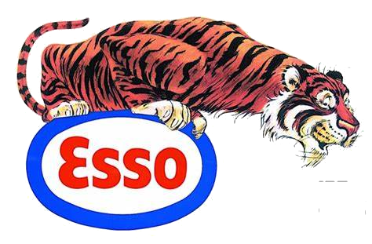

Put a Tiger in Your Tank
O Posto Esso foi uma rede de postos de combustíveis que fazia parte da Esso, uma marca de petróleo e energia. Originalmente, a Esso era uma subsidiária da Standard Oil Company, fundada em 1911 e conhecida por suas atividades em todo o mundo.
A marca Esso é agora uma parte da ExxonMobil, após uma série de fusões e aquisições. Em muitos lugares, os postos Esso foram rebatizados como Exxon ou Mobil, dependendo da região e da estratégia de branding da empresa.
A Esso teve uma presença significativa em vários países ao longo dos anos, oferecendo não apenas combustíveis, mas também uma variedade de serviços e produtos para motoristas. A marca Esso ainda pode ser encontrada em algumas regiões, mas sua presença e o nome variam conforme a localização.

.png)

Com a venda, a Petrobras expandiu suas operações e se tornou uma das maiores empresas de petróleo no Brasil, absorvendo os ativos e operações da ESSO no país.
A marca ESSO foi substituída pela marca Petrobras nos postos de gasolina e outros pontos de venda.
A saída da ESSO do Brasil marcou o fim de uma era para a empresa no país e a consolidação da Petrobras como uma força dominante no setor de energia brasileiro